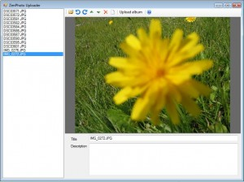

ZenPhoto Uploader
Posted: Last updated:UPDATE 2012-04-18: I haven't used ZenPhoto myself in more than 2 years now. This program won't work with newer versions of ZenPhoto, and I have no plans to update it. Feel free to download it and modify the source code to get it working again.
The photo album software I use to store my photos on the web is ZenPhoto. It is a very nice photo gallery system, with themes, lots of plugins, nice administrative interface and plenty of other good stuff. The only problem I had with it was getting my photos uploaded. Sure, they offer a web interface, or you can upload a zip file, or use FTP but I usually need to preprocess my photos a bit. Rotate them, throw out the ones I don't want to upload, and most of all I need to make them smaller, uploading them in the size I use on my camera takes forever. So, I decided to make a simple program to do these things for me.
I had previously used the program Web Album Generator to make static html albums. I really liked its interface so I mostly copied it for my own program, ZenPhoto Uploader. Theres a list of the images on the left side and on the right side is a toolbar with all available operations, a big preview screen and textboxes for adding titles and descriptions.
The program is ONLY meant for uploading albums for the first time, not for working with albums once they are uploaded. The main features of the program are:
- Create new albums (with descriptions) and upload images (obviously)
- Resize photos before uploading
- Rotate photos
- Order photos in album
- Remove photos from album and optionally delete the file itself
- Save titles and descriptions for photos
- Keyboard shortcuts for almost all actions
The program is very much "me-ware". I made it to scratch my own itch, it may not fit or feel right to anyone else. It was thrown together and is fixed as I run into bugs while using it. It may well contain errors and might crash horribly. That said, everyone is welcome to use it and improve upon it if they wish. Just know that you are using this at your own risk. I cannot be held liable for any damages or problems this program may cause. It contains commands that you can use to delete photos from your hard disk, use it carefully and think about what you are doing.
Probably my favorite feature of the program is the ability to do everything from the keyboard. The available shortcuts are:
- CTRL+U: Open the upload dialog
- CTRL+UP, CTRL+DOWN: Move to previous/next photo even though the listbox is not selected
- CTRL+SHIFT+UP, CTRL+SHIFT+DOWN: Move a photo higher or lower in the list
- CTRL+T: Give focus to the Title textbox
- CTRL+D: Give focus to the Description textbox
- CTRL+LEFT, CTRL+RIGHT: Rotate the currently selected photo
- DEL: Remove or delete the currently selected photo. There is a confirmation dialog that asks if you want to remove the photo from the album, or delete the photo. Do not choose "delete" unless you really want to delete the photo from your hard disk forever!
You can download the source here, it is licensed under the GPL v3.0. It is written in C# and requires .NET 3.5 to compile. There is a build.bat file in the root folder that can be used to build the program.
Finally, you can DOWNLOAD ZenPhotoUploader here, it is a single executable, no dependencies other than the .NET framework 2.0 or higher. The only version of ZenPhoto I've tested it against is v1.2.2, others may not work. Enjoy, and let me know if you have any problems with it.